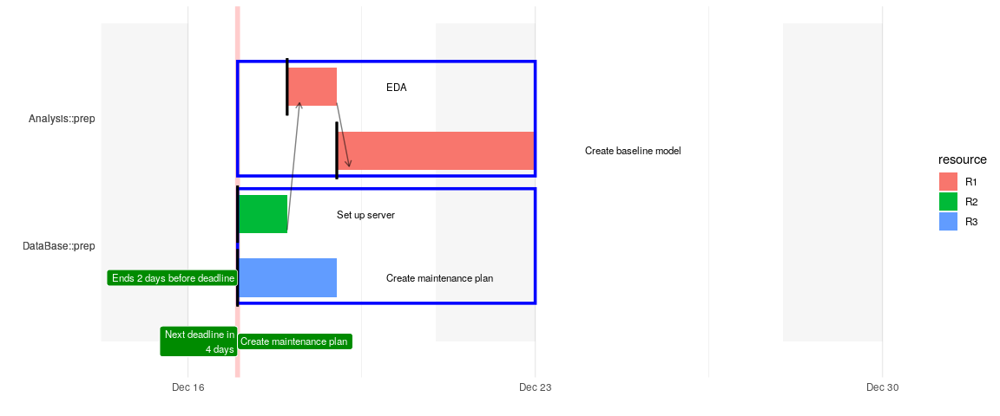
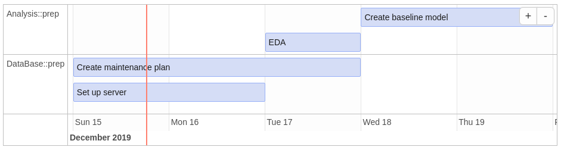

The aim of the package is to calculate time lines for different task that may depend on each other and visualize the results in a Gantt-chart.
Example
Imagine a simple 4-task-plan, where after the data base is ready an exploratory data anlysis can be performed and based on that a first baseline model can be created.

Instead of calculating and ordering the tasks manually one only defines the tasks, its duration and the dependencies between them:
raw_plan %>%
dplyr::select(project, id, depends_on, task, start, est_duration)
#> # A tibble: 4 x 6
#> project id depends_on task start est_duration
#> <chr> <chr> <chr> <chr> <chr> <int>
#> 1 Analysis eda DataBase::server EDA "" 1
#> 2 Analysis <NA> eda Create baseline model "" 2
#> 3 DataBase server "" Set up server TODAY 1
#> 4 DataBase <NA> "" Create maintenance p… TODAY 2Then using this package one can easily calculate when a task will start and be finished (excluding weekends). If a deadline is unmet or a task is due today a warning is logged.
#> project task time_start time_end
#> 1 DataBase Set up server 2019-12-17 2019-12-18
#> 2 DataBase Create maintenance plan 2019-12-17 2019-12-19
#> 3 Analysis EDA 2019-12-18 2019-12-19
#> 4 Analysis Create baseline model 2019-12-19 2019-12-23
#> dist_end_to_deadline
#> 1 NA days
#> 2 2 days
#> 3 NA days
#> 4 NA daysWith the calculated time lines a gantt chart can be plotted (see the initial plot) using:
Note that the number of days the end date of a task is away from the corresponding deadline is adjusted for weekends, for instance if it is planned that the task is done by Thrusday night and the deadline is on the following Monday, then there is one day left, i.e. Friday, before the deadline is reached. The label attached to the vertical bar displays the distance in days from today to the next deadline.
Other packages for visualization
Once the time lines are calculated it is easy to leverage other visualization packages (note that this is a screenshot that was created manually, therefore the timeline might be different from the initial plot)
plan %>%
dplyr::mutate(
id = 1:n(), content = task, start = as.character(time_start), end = as.character(time_end),
group = as.numeric(as.factor(.$section))) %>%
dplyr::select(id, content, start, end, project, section, group) %>%
timevis::timevis(groups = distinct(data.frame(id = as.numeric(as.factor(.$section)), content = .$section)))